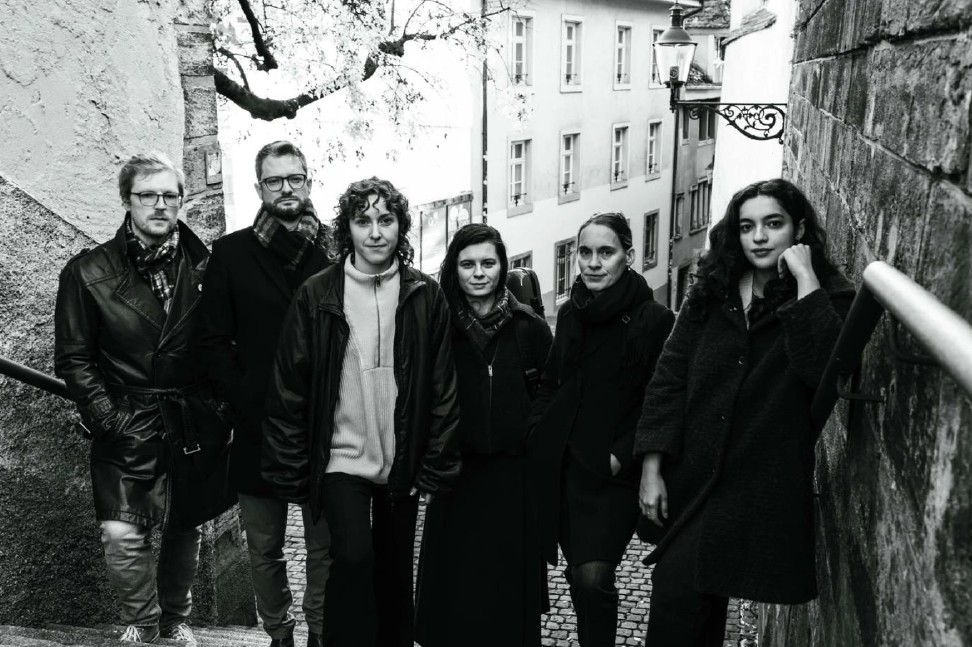

Primary Colors
Schweiz

Mit einer neuen Generation von Künstlerinnen und Künstlern, die sich an der historischen Aufführungspraxis orientieren, konzentriert sich Primary Colors auf die weniger bekannten ästhetischen Praktiken des 17. und 18. Jahrhunderts. Das Ensemble, das aus einer Kombination von Blas-, Zupf- und Streichinstrumenten besteht, widmet sich dem deutschen und italienischen Repertoire dieser Epoche und präsentiert Werke in Instrumentalkombinationen, die für ihre Komponisten vertraut, heute aber wenig bekannt sind. Primary Colors wurde 2014 an der Schola Cantorum Basiliensis gegründet und tritt seither regelmässig in der Region Basel auf. Das Ensemble hat kürzlich eine CD mit virtuoser Fagottmusik von Georg Philipp Telemann aufgenommen, die 2026 erscheinen wird.